Ruta
Paseos Cortos
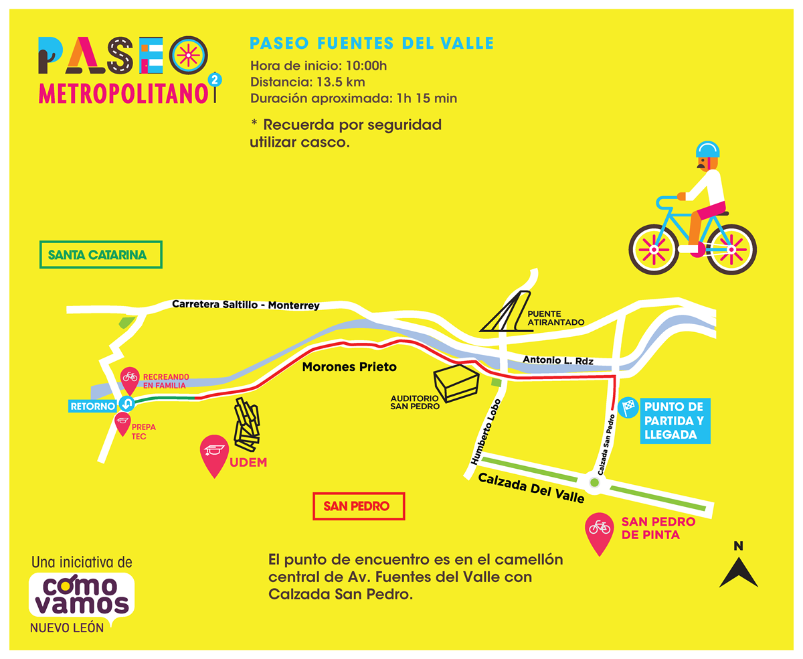
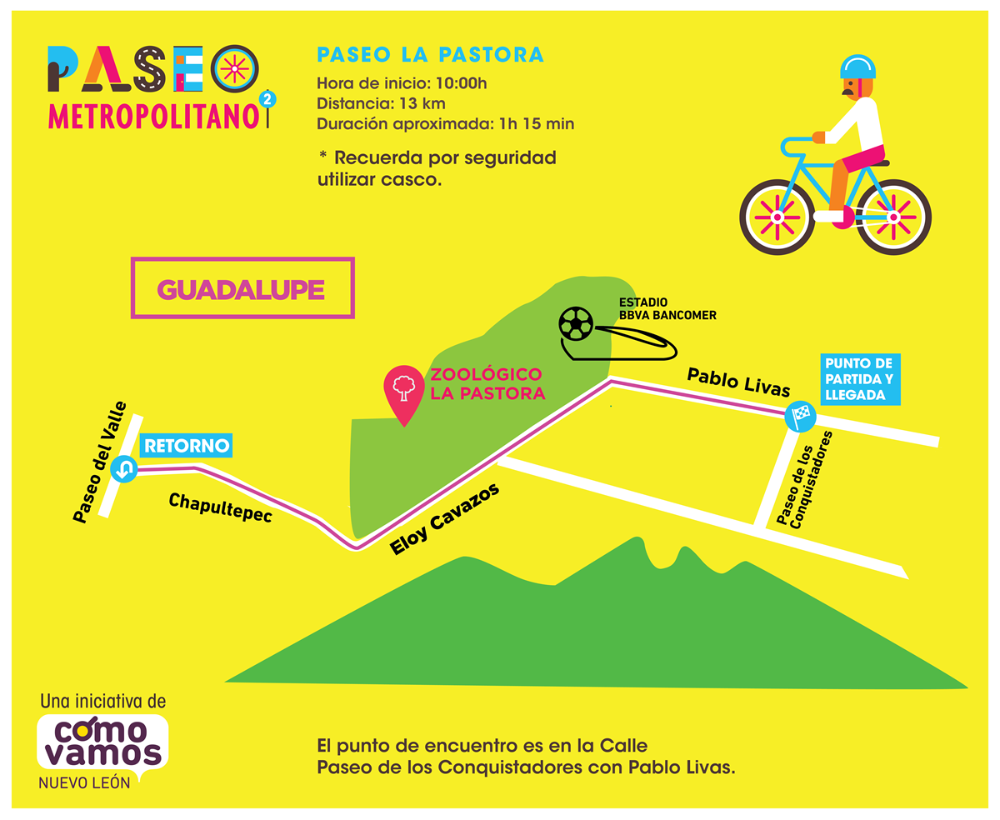
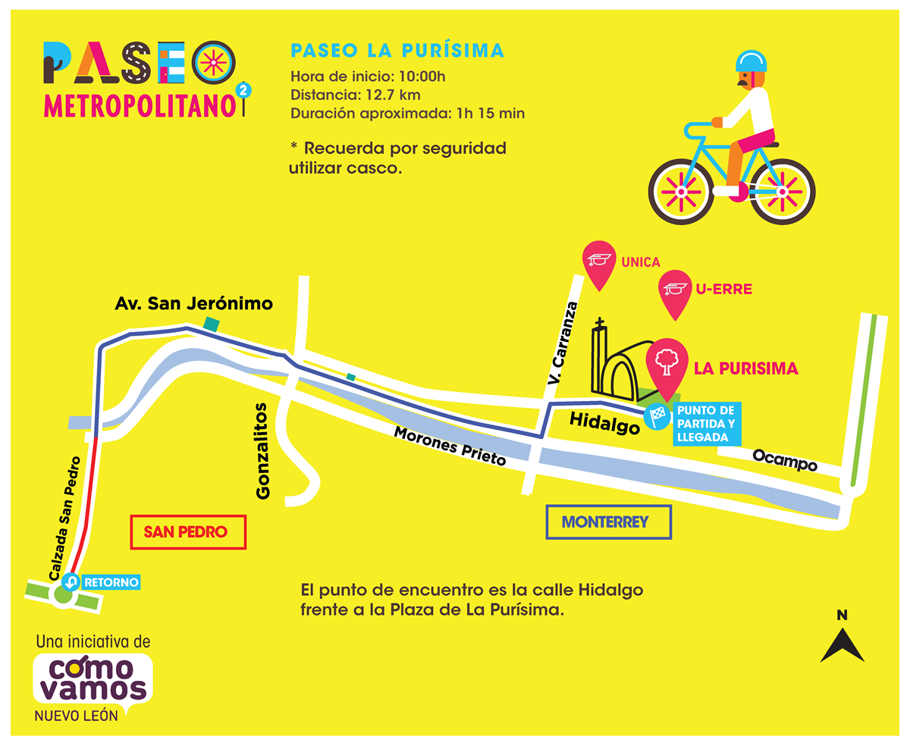
¿Te gusta andar en bici?
Tendremos puntos de préstamos de bicicletas en: Morones Prieto (Prepa Tec Santa Catarina), San Pedro de Pinta,
Av. San Jerónimo, La Purísima, Ignacio Zaragoza, Paseo de las Reynas.Lo único que necesitas es una identificación y dejar un depósito de $50 que recuperas al regresar la bici.
Rutas Deportivas
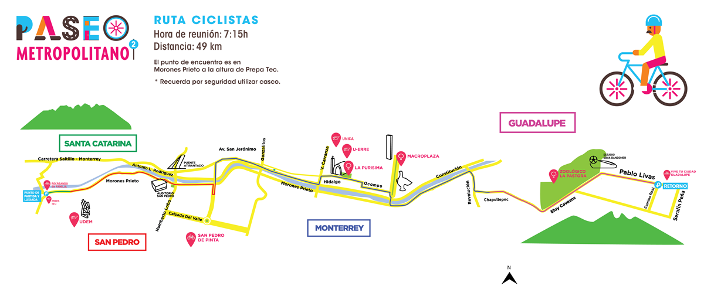
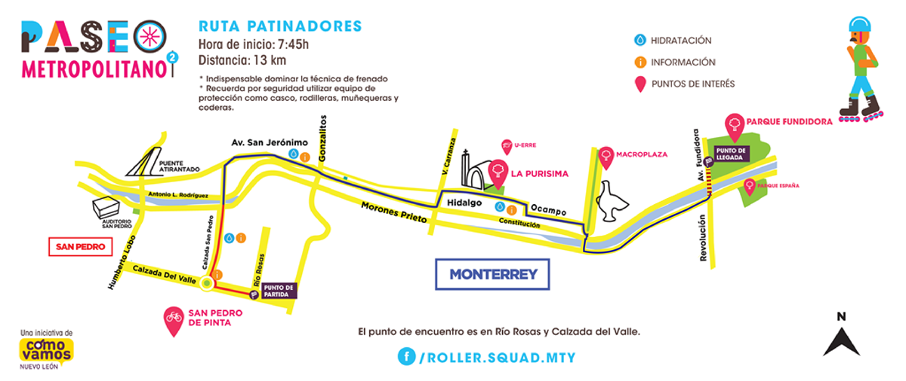
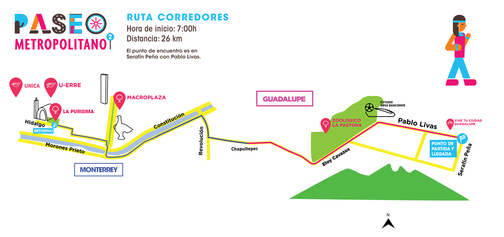
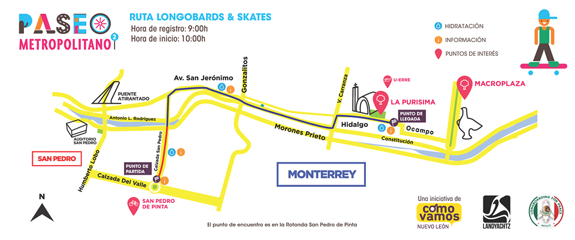
Actividades
Descubre las actividades que tenemos preparadas para ti en cada municipio:
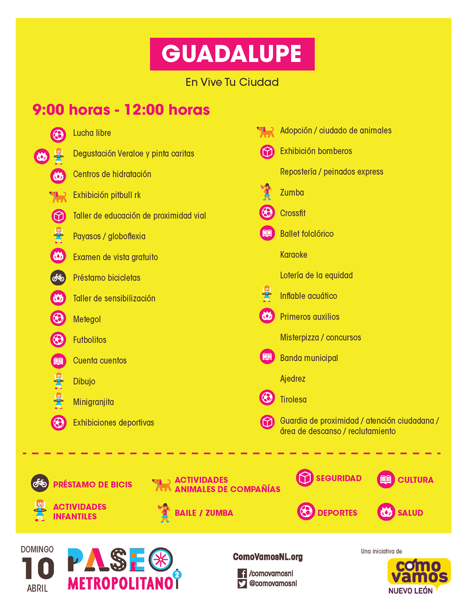
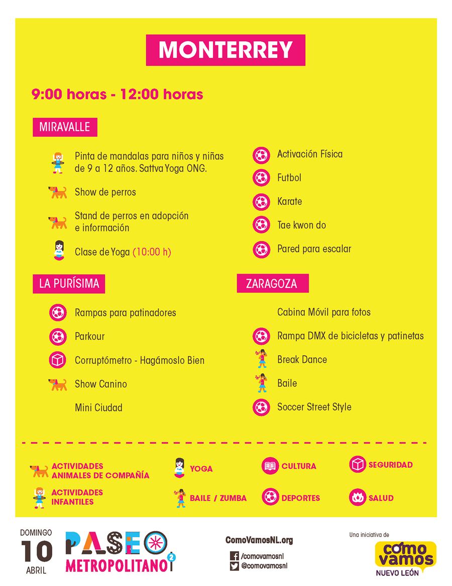
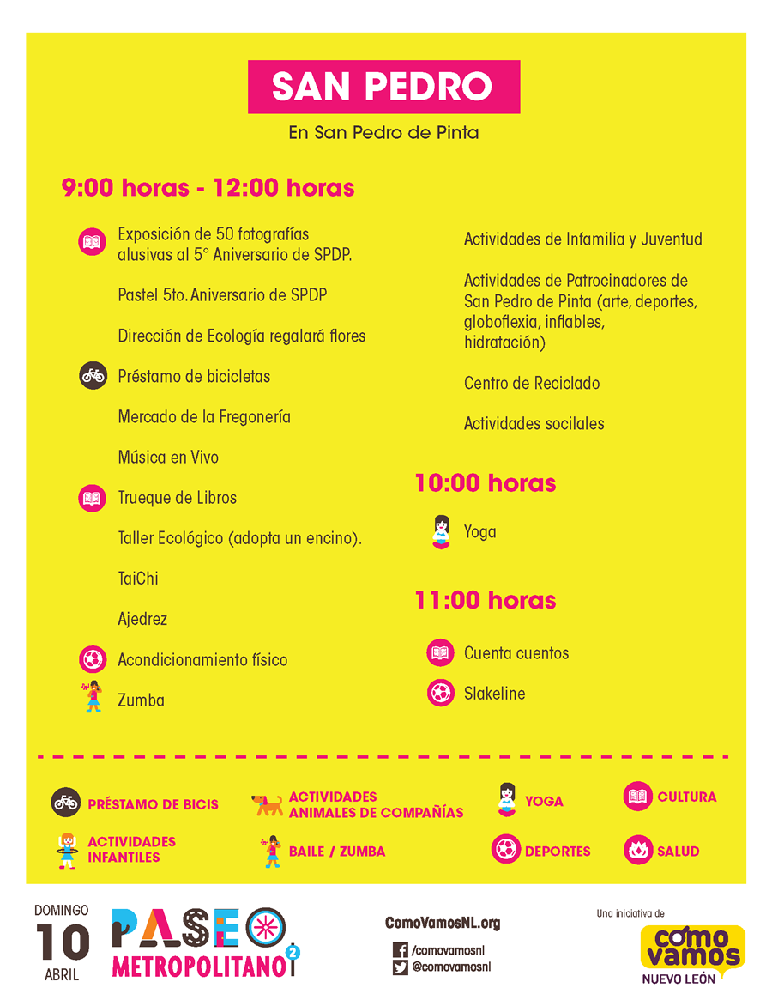
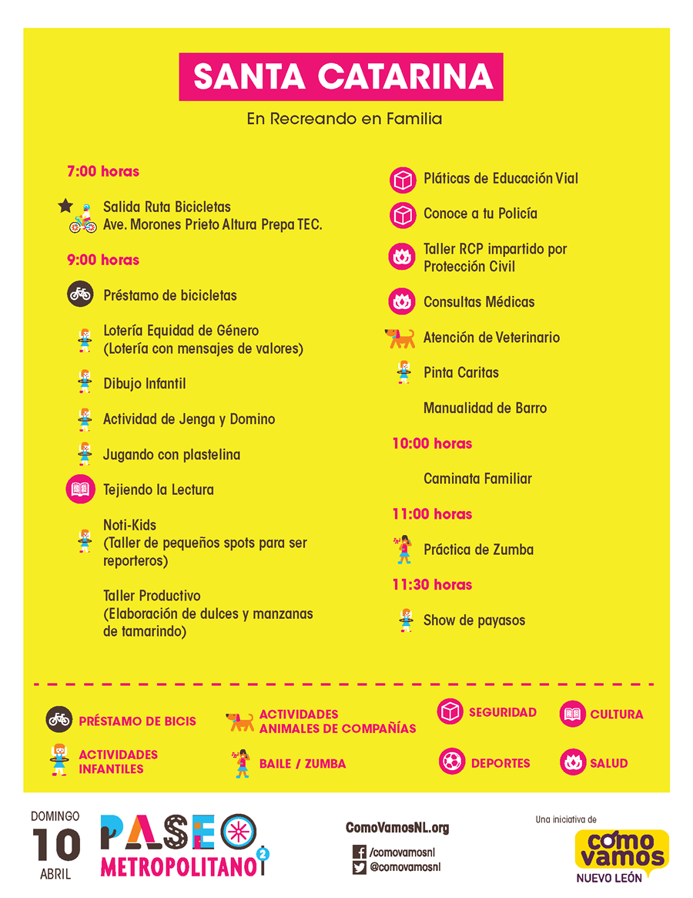
Staff
En ésta segunda edición del Paseo Metropolitano esperamos contar con cientos de voluntarios que formen parte del STAFF, los cuales estarán ubicados en diferentes zonas de la ruta acompañando y apoyando a los asistentes.
La experiencia del STAFF consistirá en:
- Apoyar a los asistentes.
- Orientar y asesorar a los asistentes brindando información.
- Fortalecer la organización y operación del evento.
- Disfrutar del evento.
¿Quién puede ser voluntario?
Cualquier persona que desee participar de modo responsable y desinteresado y esté dispuesta a dedicar parte de su tiempo libre a los paseantes.
- Ser mayor de 16 años.
- Estar disponible el día 10 de abril de 2016.
¿Cómo participar?
¡Únete a nuestra STAFF para ayudarnos a hacer de este Paseo Metropolitano un éxito!
Normas de Convivencia
Asistentes
- Dentro de la ruta no se permiten ningún vehículo de motor (ej. Motocicletas, autos, etc).
- Transita por el espacio destinado al paseo metropolitano.
- Respeta la señalización ubicada en la ruta.
- Transita por tu lado derecho.
- No circules con bicicletas en banquetas.
- La velocidad máxima para circular en cualquier tipo de transporte es de 20 km/hr.
- En caso de utilizar la bicicleta, respeta los derechos de los peatón. Reduce la velocidad y cede el paso.
- Deposita la basura en su lugar.
- Todos los niños deben ir acompañados de un adulto responsable.
- Las áreas verdes de la ruta del paseo metropolitano deben ser respetadas y cuidadas.
- El horario del evento es de 7:00 a 13:00 horas.
Asistentes con animales de compañía
- Podrás asistir con tus animales de compañía siempre y cuando éstos no sean animales exóticos, de granja o en peligro de extinción.
- Todas los animales de compañía deben de ir con correa corta y a cargo de un adulto responsable.
- Es responsabilidad de cada asistente recoger las heces de sus animales de compañía y depositarlas en un bote de basura.
- En caso de que algún animal de compañía llegue a causar un accidente, el dueño debe hacerse responsable dando sus datos y los de su animal de compañía a la autoridad responsable.
Actividades
- El paseo metropolitano es un evento apartidista y laico, se prohíbe cualquier actividad de esa índole.
- Está estrictamente prohibido la venta de cualquier tipo de servicio, artículo o producto, ni recaudación de fondos por medio de boteos.
- Está prohibido el uso de megáfonos.
- En el caso de la música, esta deberá de ser apropiada para un evento familiar sin mensajes ofensivos o violentos.
- Toda la publicidad y participación dentro del evento tendrá que ser coordinada por el municipio correspondiente.
- Queda estrictamente prohibido la repartición de folletos, panfletos, trípticos o material de papel.